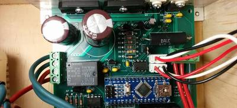

2016-04-21 - Nº 51

Editorial
Aqui está a Newsletter Nº 51 no seu formato habitual. Agora às quintas-feiras. Se gostar da Newsletter partilhe-a!
Todas as Newsletters encontram-se indexadas no link.
Esta Newsletter tem os seguintes tópicos:
Esta semana foi lançado pela Canonical o Ubuntu 16.04. Trata-se de uma versão LTS o que significa que tem um suporte de 5 anos. Esta versão entre outras coisas trás o Kernel de Linux 4.4, novas versões do GTK e do Qt, a ultima versão do Libreoffice e do Firefox. Vem ainda com um formato de aplicação novo - o 'snap'.
Na Newsletter desta semana apresentamos diversos projetos de maker. Na rubrica "Documentação" apresentamos seis livros (eBooks) que podem ser descarregados livremente e que esta semana são sobre Optimizações de programas com geração automatizada de código, Computação de alto desempenho, a filosofia da Ciência dos Computadores, Documentação da Linguagem Julia, um livro sobre o Kernel Linux e um livro sobre a introdução À programação em asssmbly em Micro-controladores AVR.
 João Alves ([email protected])
João Alves ([email protected])
O conteúdo da Newsletter encontra-se sob a licença  Creative Commons Attribution-NonCommercial-ShareAlike 4.0 International License.
Creative Commons Attribution-NonCommercial-ShareAlike 4.0 International License.
Novidades da Semana ^
Canonical unveils 6th LTS release of Ubuntu with 16.04
"Canonical announced today it will release Ubuntu 16.04 LTS on 21st April, featuring the new ‘snap’ package format and LXD pure-container hypervisor. This is the latest version of the world’s most widely used Linux platform across desktop, IoT and cloud computing."
Ciência e Tecnologia ^
-
"Researchers at the U of T Institute of Biomaterials & Biomedical Engineering (IBBME) have developed a new way of growing realistic human tissues outside the body. Their “person-on-a-chip” technology, called AngioChip, is a powerful platform for discovering and testing new drugs, and could eventually be used to repair or replace damaged organs. Professor Milica Radisic, graduate student Boyang Zhang and their collaborators are among those research groups around the world racing to find ways to grow human tissues in the lab, under conditions that mimic a real person’s body. They have developed unique methods for manufacturing small, intricate scaffolds for individual cells to grow on. These artificial environments produce cells and tissues that resemble the real thing more closely than those grown lying flat in a petri dish."
Experiments show magnetic chips could dramatically increase computing’s energy efficiency
"In a breakthrough for energy-efficient computing, UC Berkeley engineers have shown for the first time that magnetic chips can actually operate at the lowest fundamental energy dissipation theoretically possible under the laws of thermodynamics. The findings, published today in the peer-reviewed journal Science Advances, mean that dramatic reductions in power consumption are possible — down to as little as one-millionth the amount of energy per operation used by transistors in modern computers. This is critical for mobile devices, which demand powerful processors that can run for a day or more on small, lightweight batteries. On a larger, industrial scale, as computing increasingly moves into “the cloud,” the electricity demands of the giant cloud data centers are multiplying, collectively taking an increasing share of the country’s — and world’s — electrical grid."
TAU creates cyborg cardiac patch for diseased hearts
"Tel Aviv University researchers combine electronics with living tissues to create a self-regulating cardiac patch. More than 25% of the people on the national US waiting list for a heart will die before receiving one. Despite this discouraging figure, heart transplants are still on the rise. There just hasn't been an alternative. Until now. The "cyborg heart patch," a new engineering innovation from Tel Aviv University, may single-handedly change the field of cardiac research. The bionic heart patch combines organic and engineered parts. In fact, its capabilities surpass those of human tissue alone. The patch contracts and expands like human heart tissue but regulates itself like a machine."
-
"Researchers at HRL Laboratories, LLC, have achieved the first demonstration of gallium nitride (GaN) complementary metal-oxide-semiconductor (CMOS) field-effect-transistor (FET) technology, and in doing so have established that the semiconductor’s superior transistor performance can be harnessed in an integrated circuit. This breakthrough paves the way for GaN to become the technology of choice for power conversion circuits that are made in silicon today. According to HRL Senior Staff Research Engineer and Principal Investigator Dr. Rongming Chu, GaN transistors have long excelled in both power switching and microwave/millimeter wave applications, but their potential for integrated power conversion has been unrealized. "Unless the fast-switching GaN power transistor is intentionally slowed down in power circuits, chip-to-chip parasitic inductance causes voltage instabilities," he said."
Artificial Leaf Harnesses Sunlight for Efficient Fuel Production
"Generating and storing renewable energy, such as solar or wind power, is a key barrier to a clean-energy economy. When the Joint Center for Artificial Photosynthesis (JCAP) was established at Caltech and its partnering institutions in 2010, the U.S. Department of Energy (DOE) Energy Innovation Hub had one main goal: a cost-effective method of producing fuels using only sunlight, water, and carbon dioxide, mimicking the natural process of photosynthesis in plants and storing energy in the form of chemical fuels for use on demand. Over the past five years, researchers at JCAP have made major advances toward this goal, and they now report the development of the first complete, efficient, safe, integrated solar-driven system for splitting water to create hydrogen fuels."
-
"Two properties are particularly sought after in materials for technology (for a variety of devices from sensors to computer memory, etc.): magnetism and ferroelectricity. Obtaining materials with both qualities is highly desirable. At the present time, these properties have shown to be almost entirely mutually exclusive, but a new study conducted by SISSA/Northwestern University introduces an innovative method which may soon become reality. "
Documentação ^
A documentação é parte essencial do processo de aprendizagem e a Internet além de artigos interessantes de explorar também tem alguma documentação em formato PDF interessante de ler. Todos os links aqui apresentados são para conteúdo disponibilizado livremente pelo editor do livro.
Livros
Partial Evaluation and Automatic Program Generation
"This book is about partial evaluation, a program optimization technique also known as program specialization. It presents general principles for constructing partial evaluators for a variety of programming languages; and it gives examples, applications, and numerous references to the literature."
-
"The purpose of this book, High Performance Computing has always been to teach new programmers and scientists about the basics of High Performance Computing. This book is for learners with a basic understanding of modern computer architecture, not advanced degrees in computer engineering, as it is an easily understood introduction and overview of the topic."
Philosophy of Computer Science
"This document is a continually-being-revised draft of a textbook on the philosophy of computer science. It is based on a course I created for the Department of Computer Science and Engineering and the Department of Philosophy at the State University of New York at Buffalo."
-
"Scientific computing has traditionally required the highest performance, yet domain experts have largely moved to slower dynamic languages for daily work. We believe there are many good reasons to prefer dynamic languages for these applications, and we do not expect their use to diminish. Fortunately, modern language design and compiler techniques make it possible to mostly eliminate the performance trade-off and provide a single environment productive enough for prototyping and efficient enough for deploying performance-intensive applications. The Julia programming language fills this role: it is a flexible dynamic language, appropriate for scientific and numerical computing, with performance comparable to traditional statically-typed languages."
-
"Writing books is not a new experience for me. I've been doing it since the age of 10. Most of these books gather proverbial dust on this or that hard disk, others are being pampered for limelight, others yet have been abandoned. There's no better place to announce the demise of one project as at the birth of another. As you may have guessed, my super-extensive mother-of-all Linux topics book is not going to be published any time soon, as simple system administration no longer excites me. The single Apache chapter remains a proof-of-concept poetic demonstration, an orphan of what might have been."
Beginners Introduction to the Assembly Language of ATMEL-AVR-Microprocessors
"AVR assembler tutorial beginner's course"
Modelos 3D ^
Com a disponibilidade de ferramentas que permitem dar azo a nossa imaginação na criação de peças 3D e espaços como o thingiverse para as publicar, esta rubrica apresenta alguns modelos selecionados que poderão ser úteis.
Ball Joint Library
Improved version of customizable ball joint ( http://www.thingiverse.com/thing:1968 by Erik).
Improvements:
- More parameters and relative sizes of socket lock
- optional socket helper section
- optional hole to pass cables through
- additional part "section" to construct articulated arms.
Customize your knob!
A knob finishing off my Pixel Clock (see: http://jh-interact.blogspot.nl/2016/02/pixel-clock-introduction-preview.html)
The knob is customizable in different ways:
- Choose from base shapes cylinder or flower.
- For a cylinder you can choose the number of vertices to create a triangle, square, etc. Then a number of cylinders are subtracted.
- The flower shape consist of a number of cylinders, 'convex hulled' from the middle.
- Hole size to fit different axles. Provided are D-shaped and cylinder ('normal') shaped.
- And the depth can be adjusted for different sized axles.
Modular hollow universal joint for cable management
This is a hollow modular universal joint to make your cable mess look a bit more attractive and manageable. Install where needed; office desk, home office, studio, botcave... Similar to cable chain but can move in 2 directions at once or due to its modularity you can make it bend in one direction like regular cable chain. Combine with the accessories kit to make it even more versatile! http://www.thingiverse.com/thing:26125
Projetos Maker ^
Diversos Projetos interessantes.
-
"So I decided on making a retro arcade machine for my first raspberry pi project. Hope you enjoy my guide and find it useful :-)"
-
"I had a "brand name" burglar alarm system installed in this house many years ago, but when I switched my phone system to use VOIP over my internet, the phone connection to the alarm system was disconnected and it was too much bother to re-route the phone system to accomodate the alarm system. In addition, I wasn't too wild about the $30/month monitoring fee, and also the fact that the system relied on the phone system. Wouldn't an internet enabled alarm be "better"? It could text me, email me, and be easier to control. Time to whip out another Arduino."
Getting Started with Atmel ATtiny10
"I like Atmel tinyAVRs because they are tiny computers that I can (almost) wrap my head around. The Atmel ATtiny4/5/9/10 are the cheapest in the tinyAVR line, and they come in two packages - SOT23 pictured above, and an even more stupendously small 2mm x 2mm USON package. This article will talk about programming these little chips. Though they may be tiny, they are still quite capable, and the right choice for many projects."
-
"This is my Hexapod, it's based around Lynxmotion's Phoenix hexapod and is running a modified version of KurtE's phoenix's code base."
How to Build a Raspberry Pi Terrarium Controller
"Whether youre growing tropical plants or keeping reptiles as pets, an electronic controller can provide a more stable environment than you could ever hope to achieve using regular timers. By integrating your terrarium into the Internet-of-Things using a Raspberry Pi, its possible to create a highly-extensible system which offers automation, data visualisation, alerts, and pretty much anything you or your pets could want."
How to make an infinity mirror box
"What you'll need: Access to a laser cutter - You'll really need this because most parts are made with a laser cutter. Access to a soldering kit Youll really need a soldering kit. If you dont have one or dont have access to one you should probably buy one anyway if you want to make other technical"
Frequency synthesizer for my Jupiter receiver
"Radio astronomy offers much fun + learning for the radio homebuilder -- example topics include how to design and make antennas, LNAs, receivers, and frequency synthesizers from HF to microwave. Further we may craft op-amp analog integrators to remove background noise, and/or ADCs, plus write software to store and analyze our data. Avid radio astronomers enjoy a strong understanding of noise measurement/physics, plus a whole lot of really cool science. I've already made new friends and feel inspired by the dedicated, skillful folks who listen to signals from space on stuff they craft in their home labs. In radio astronomy, Dx might mean receiving signals from 590 million kilometers away. I'm in!"
Half Bridge Driver based on IR2104
"This Half-bridge driver based on IR2104 gate driver IC and N channel Dpak MOSFET , The IR2104 is a high voltage, high speed power MOSFET driver with independent high and low side referenced output channels. HVIC and latch immune CMOS technologies enable ruggedized monolithic construction. The logic input is compatible with standard COMOS or LSTTL output, down to 3.3V logic. A gate IR2104 driver is a power amplifier that accepts a low-power input from a controller IC and produces a high-current drive input for the gate of a high-power transistor such as a power MOSFET. In essence, a gate driver consists of a level shifter in combination with an amplifier. This drive has many application, ranging from DC-DC power supply for high power density and efficiency, This project simplifies the design of control systems for a wide range of motor applications such as home appliances, industrial drives, DC brushed motors , Brushless motors, fans, Tesla Coil driver, Induction coil driver, LED driver, Halogen Lamp driver."
-

"This project is a simple linear bench power supply with adjustable voltage and current. It is meant to be a learning experience, putting ideas of circuit design, feedback, stability into practice building a complete practical power supply. I have intentionally avoided using a 3 terminal regulator or purpose built chip and instead implemented the feedback for voltage and current using a couple of opamps. The idea is for this to be a practical final product while giving pactice implementing some basic circuits."
Display Colorful Message In Limited Resources
"In many MCU projects, there are a big challenge on how to display a human readable message. This Instructables demostrate how to use a very limited resources (1 KB ROM, 64 Bytes RAM and 60 LEDs) to display a colorful message."
Arduino Adjustable Pet Food Dispenser
"Welcome to our Instructable for our Arduino Pet Food Dispenser. We are Dan and Tom, and we are product design students at Cardiff Metropolitan University in South Wales, we were given this challenge as part of an assessment brief to show that we have a basic understanding of coding, electronic prototyping and mechanics"
FPGA Robotics Vision for anyone
"Are you like me interested in technology and always wanted to use one of those heavy chips called FPGA's? Are you interested in vision and robotics? My goal was to bring FPGA vision to the people, accessible to everyone. I decided to build my own basic vision system. Not based on some FPGA manufacturers expensive IP and hardware. No! Just by using a camera, LCD display that can be found anywhere on Ebay or chinese webshops."
DIY 2k(2560x1440) LED beam projector
"This instruction explains how to make a DIY 2k resolution (2560x1440) beam projector."
Arduino "Blink To Talk" using Charlieplexing
"This project can be classified as an AAC (Alternative and Augmentative Communication) device, which are used as a means of communication for those suffering from debilitating diseases like ALS and the like, that result in complete paralysis and near-total loss of body function. The device we shall build in the course of this instructable, enables a patient to communicate with people merely by blinking their eyes."
ESP8266 based Irrigation Controller
"In the past couple of months, I've taken interest in the popular ESP8266 wifi enable uC. I've also wanted for a long time to start designing PCBs, so I decided to mix both interests and build an irrigation controller. I am no expert in PCB design nor any electronics for that matter. I'm a software guy. So this whole PCB design is done in a very amateur way and some of the experts out there might find many flaws in my design. But the important thing is that it does work as expected and most of all: I had a lot of fun and learned a lot of things while doing this. That project may look like a failure to some, but it is definitely a victory for me since I ended up learning things. And next time, I'll learn even more until I get good at it. That's the process I went through to learn about software design. I have to fail once before taking on the theory."
-
"The ESP8266 is a WIFI-enabled SoC available in many shapes and forms. It usually comes with nodemcu firmware which runs on lua script. Most of us just flash it using the arduino core provided by the Esp8266 community themselves."
AGRICULTURE PARAMETER MONITORING

"An efficient and real time remote monitoring of agricultural environmental parameters is proposed. The system uses a WSN network from where the data is acquired from sensor nodes and it is transmitted through the wireless transmission protocol, Zigbee from the source node to the sink node Zigbee, this acquired data by the Zigbee which is in packet form is processed by the microcontroller and the collected data is uploaded to the cloud and the processed data are displayed through a mobile android application in a graphical form which makes interpretation of data easier. Keywords: WSN, Zigbee, cloud, Mobile android application."
-
"In my latest project I tried to realise a simple and cheap cycling powermeter based on Arduino. After a month I can say "Yes I can". There are many commercial products (SRM, SRAM ...), but I'm always looking for a homemade solution. On the following pages I'll show you my successful construction."
-
"In a busy city, we commute a lot. And if we choose a car as our mode of transport, finding a parking spot become quite a challenge. This is a prototype for a parking spot status indicator. This would make a good science project for the tech and skills required is nothing more than to program an obstacle detector."
Arduino Automatic Watering System
"In this Instructables guide I will show you how to make your own - Arduino -automatic watering system for your "desk" flower (or plant). The whole procedure is very easy and you can complete this guide in about 30 min. The goal is to automatically watered the plant when the soil moisture decreases, so we will use one "soil hygrometer" sensor for this measurement. For watering, we will use one small air-pump motor that will blowing air into the bottle from one small pipe! The pressure will throw the water from the other pipe to our plant."
ATTiny85 Game Timer - Get rid of that old hourglass!
"This is a little project that uses ATTiny85 to make a simple "game timer", intended to be used with board games that demand timed turns, like "Rummikub" or "Scrabble". Never wait for all that sand getting down for the next turn again!!"
-
"The new project of make it extreme is the transformation of an old microwave oven into a brand new spot welder. How did we manage that? Firstly, we decomposed the microwave oven and took its transformer and the fan that cools it. The particular project was planned not to make a portable spot welder but one with a stable basis."
How to Modify RC CAR Via 2.4 GHz NRF24L01 Arduino Part1 Transmitter(Tx)
"This instruction will introduce you how to modify cheap rc car by using 2.4 GHz nRF24L01 module with Arduino controller UNO. Ordinary rc car toy use AM/FM 28-40 MHz radio control which have only 5-10 m. remote range and noisy control around blind area. The instruction will advice how to modify transmission to be 2.4 GHz system that is free license radio frequency range.It's more reliable,farther remote range and less noisy."
-
"I needed a Lux meter for testing flashlights. There are some good lux meters available in the $15-25 range, but shipping always takes a long time and I needed it now. That's when I realized that I had an unused BH1750 light meter module laying around, which I bought some time ago but never used it. So I grabbed an Arduino, a Nokia 5110 LCD, wired everything up on a breadboard and had a functioning lux meter within a few hours. To make it a bit more fancy, I added some graphing functionality and made the LCD backlight switch on/off depending on the light level."
Control ESP8266 over the internet (from anywhere)
"There are but a few things better than (succesfully) programming and using your Arduino. Surely one of those things is using your ESP8266 as an Arduino with WiFi! In this instructable I will show you an EASY way to get the ESP8266 working as a web server AND accessing that server from anywhere (over the internet)"
Intelligent Arduino Uno & Mega Tic Tac Toe (Noughts and Crosses)
"I decided to create the classic game of Noughts and Crosses (or Tic Tac Toe, as it's also known) on the Arduino after being asked by my daughter if we could build a game together. Here is a video her playing the final version on the Arduino Mega. The second video is me demonstrating the Arduino Uno version. I included some artificial intelligence (rather than just random placement) for the Arduino so that it tries to win, tries to stop you from winning if it can't, and only then places randomly."
DIY Robot Arm Robotic Draw Homemade Frame With 2 Stepper Motor
"DIY Robot Arm Robotic Draw Homemade Frame With 2 Stepper Motor"
How to Make Arduino Battery Shield
"Arduino battery shield"
-
"Building a tabletop controller gaming/arcade system using a Raspberry PI 3 - can be expanded to use USB N64, NES, SNES, and other controllers with front-mounted USB ports. This build does require a laser cutter (I used a LaserCAMM) to minimize total time of the project - I am sorry to those who may not have access to one for this build. I will try to highlight differences that you may experience if you have a different type of laser cutter - the biggest consideration is whether the max material size is at least 24" x 36"."
Remote Temperature Monitoring Using MQTT and ESP8266 Modules
"If you want to monitor some remote temperatures this Instructable will show you can do this by using some ESP8266 modules, MQTT (with a broker), LCD screen (for local monitoring), home-assistant (for local and remote monitoring), and of cause some temperature sensors (I use DS18b20 as they are pretty good and cheap enough)"
-
"Thats a job i do in my high school. it is a robotic arm full 3d printed, contoled with arduino. i hope you like it!! and sorry for my english i'm from catalonia and i have 20 yeras old."
Mini CNC machine Arduino Based & Adafruit Driver Motor L293D v1 & 2*Mini Stepper CD/DVD player #1
"In this project I will show you how to easily build your own low-cost Arduino Mini CNC Plotter! For X and Y axis we will use stepper motors and rails from two dvd/cd roms! Printing area will be max 4x4cm."
Arduino Controlled Lock Box With Solenoid and RFID
"The RFID Lock Box combines Arduino, RFID and a Solenoid to make your very own personal safe! The Lock Box will only open to Key Cards that you've programmed into the system, locking everyone else out! This guide will show you how setup the electronics for and assemble your RFIDuino Lock Box. You will start of by setting up and programming the Geekduino microcontroller. You will then be able to test your electronics, and then move onto assembling your Lock Box Kit."
PIC16F628A Programmable Digital Timer
"Programmable relays find use in numerous automation applications such as automatic street light control, watering and pump control, HVAC, home automation, power plants automation in industries, etc. This article describes how to build a fully functional, one-channel programmable relay switch using the PIC16F628A microcontroller. It allows you to set both ON and OFF time. The maximum time interval that you can set for on and off operations is 99 hours and 59 minutes. Another interesting feature of this project is it offers cyclic option, which means you can choose to run it in a continuous loop of ON and OFF cycles. The device can be programmed through 4 push switches. The programming menu and device status are displayed on a 162 character LCD. The timing resolution of this relay timer is 1 minute. The timer also saves the user inputs to its internal EEPROM so that it can retain these values after any power supply interrupt."
-
"I have been using Nathan Chantrells Tiny328 for quite some time as my swiss army knife ISM radio node. Now I wanted a more slim ISM node as my setup with a Tiny328 on a breadboard is not very deployable. I could of course 3D print a case for the Tiny328 but I have limited access to 3D printers and do not feel I have the time to explore that exciting part of the maker world just yet. This leaves me with finding off the shelf project boxes with a compartment for 2x AA batteries and the radioduino (and in an acceptable form factor). That search came up disappointingly, and surprisingly, short. I did have a set of standard eBay AA battery holders and looking at the 3x variant it occured to me. I needed to shrink the radio node, and the AAduino was born."
Get your morning update with Beam
"You wake up in the morning. You're groggy. You grab your phone lazily and start browsing. You check the weather, your stocks, your instagram. Before you know it, you're running late! Do your mornings look like this too? We've been there! We wanted to streamline our mornings so we built a morning feed so that we can get all the info while we brush our teeth. Multitasking FTW! In this example, we're going to get the daily forecast, temperature and stock update and scroll it on Beam with a Particle Photon."
The MagnetMobile: Making a Wall Crawling Rover
"So recently I came up with an idea nay, a challenge: to build a robotic rover that drives up a metal surface. I challenged my co-worker Kyle and myself with this goal in the form of a one day build-off. We documented the adventure (our thought process, trials, errors and successes) in our video podcast Control Issues (iTunes, YouTube). You may also recognize this little robot from the current (May/Jun 2016) cover of Robot Magazine. This article takes our best working model and shows you how to build one yourself with off-the-shelf parts."
-
"Are you a fashion trend-setter? Do you like to know how other's feel about your clothing choices? Don't want to look at your phone to know when your style owns the room, or worse, you've made a fashion faux pas on the level of socks with sandals? Introduction "Green Light: Fashion", the first wearable that provides an easy way for you to get immediate feedback on your ensemble and keep you ahead of the fashion curve."
Backyard Beehives: The Electric Hive
"David Ammons, a research biologist and hobbyist beekeeper, and myself, Graham Toal - computer programmer and Maker - are working on a project to add electronic instrumentation to beehives. What you're looking at here is a raspberry pi with a video camera which records all the bees entering and leaving a hive. It's a starter project for a fully instrumented hive which will eventually record data from many other sensors, including temperature, sound, and hive weight."
Switching Voltage Regulator Tutorial
"A switching voltage regulator is one of my favorite circuits. In school, they were the first circuits I built where I understood how transistors worked. In fact, they were the first circuit I saw an inductor being useful! Switching regulators are incredibly efficient when designed properly. Of course, this detail about design is important."
-
"This project was made for fun. I was bored and as always, I needed to program something. I came across an idea for just a 2d radar. I wanted to expand upon this. So I created a program that enables you to scan an entire room without needing to use a laser. It works by scanning 100 degrees along the x plane, then going up by 1 degree at a time along the y plane. It then send data via serial to a processing computer running the python program. "
That's all Folks!